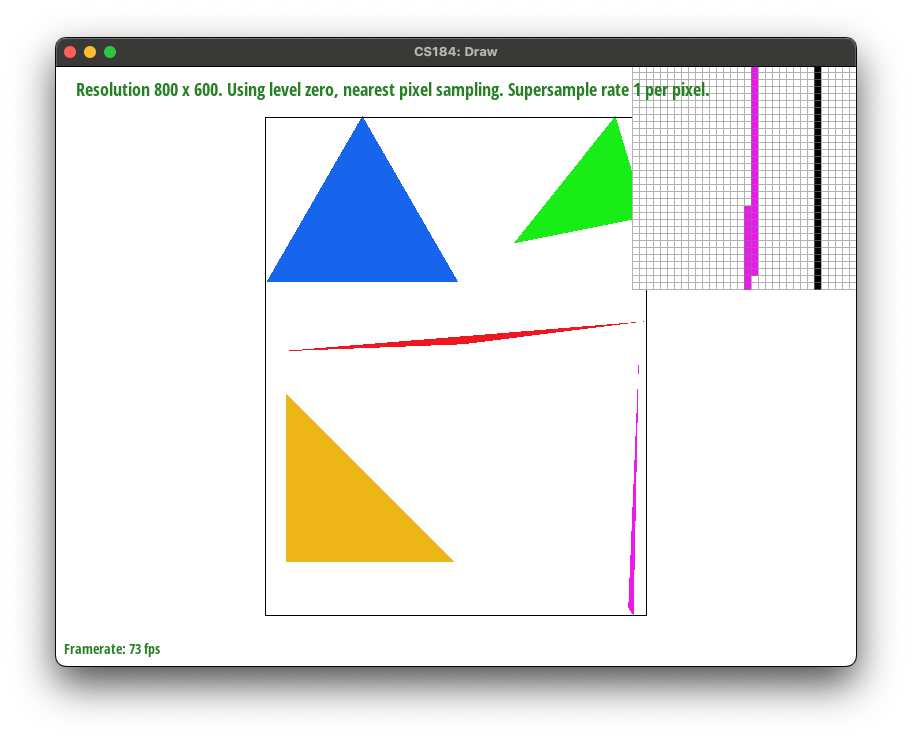
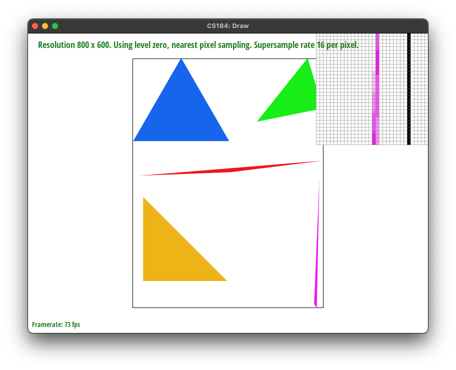
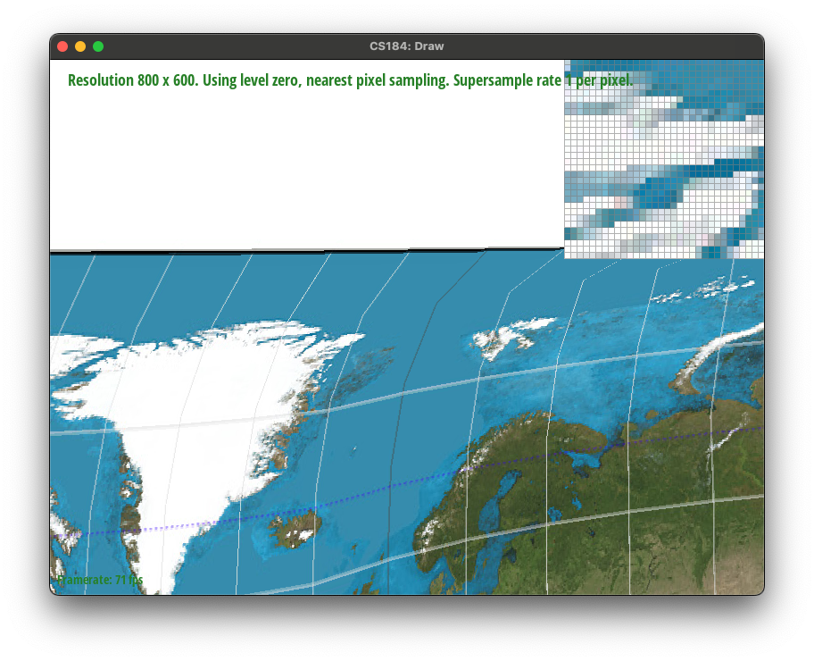
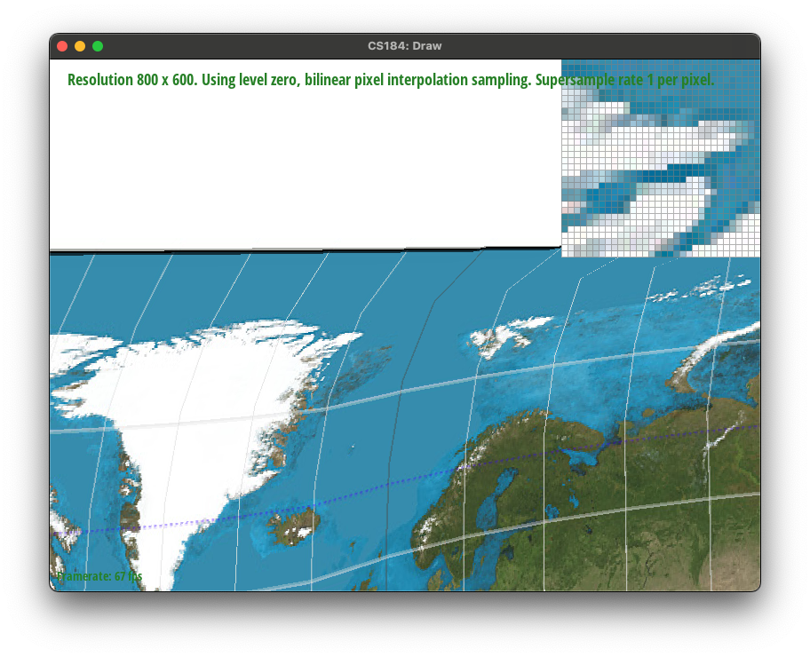
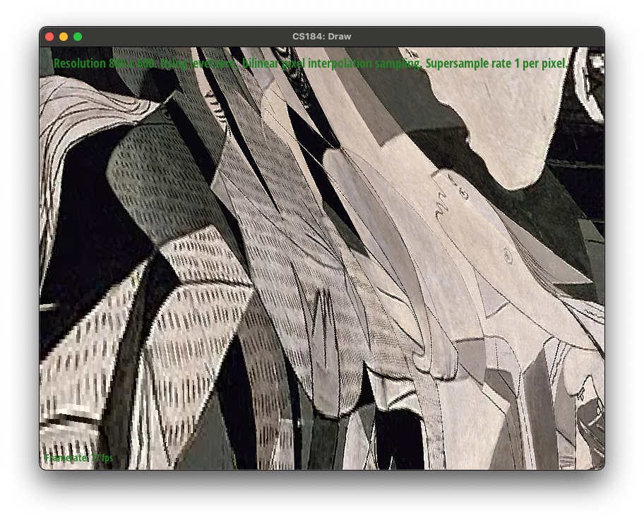
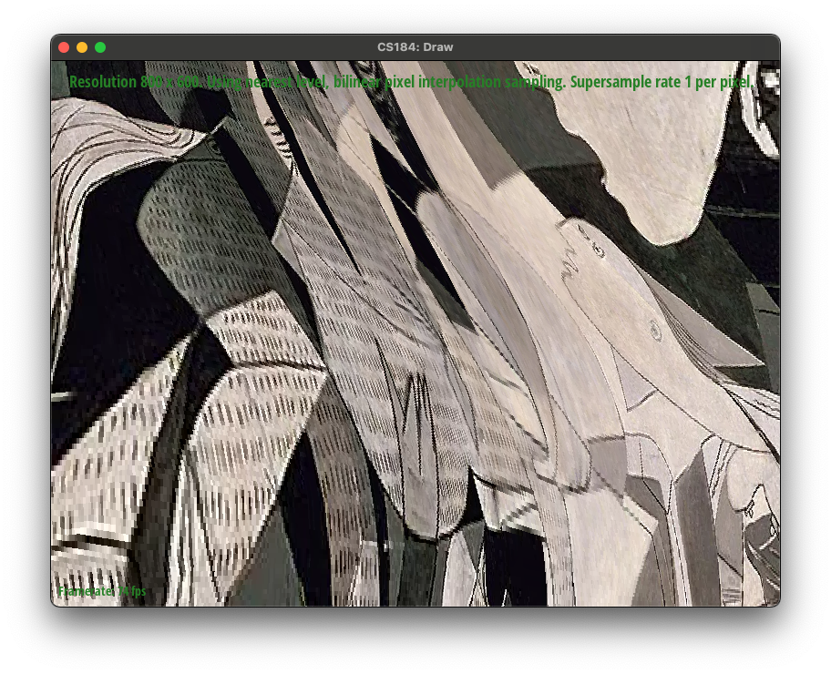

Give a high-level overview of what you implemented in this homework Think about what you've built as a whole. Share your thoughts on what interesting things you've learned from completing the homework.
Rasterizing triangles is a fundamental process in computer graphics, used to convert geometric data (like the vertices of a triangle) into a raster image (a grid of pixels). This process involves several steps, and I'll describe it in a straightforward way:
Triangle Setup: It starts with defining the triangle using the coordinates of its three vertices. These vertices are typically defined in a 2D space (for simplicity) or a 3D space (in more complex systems where they are then projected onto a 2D view).
Bounding Box: Calculate a bounding box around the triangle. A bounding box is the smallest rectangle that completely encloses the triangle. This step helps to limit the area we need to consider for rasterization, improving efficiency by avoiding checking every pixel on the screen.
Scan Conversion: Iterate over each pixel within the bounding box and determine if it lies inside the triangle. This can be done using edge functions, which are linear equations derived from the edges of the triangle. By evaluating these functions for each pixel, we can determine if the pixel is on the inside or the outside of each edge. If a pixel is inside all edges, it's inside the triangle.
Our algorithm is no worse than the naive approach that starts by defining a bounding box around the triangle. This already reduces the number of samples to check by ignoring the areas outside the box.
Here is an example of our triangle rasterization methods, and how it fails to model high frequency portions of the image, such as the sharp edges of a triangle.
Supersampling improves image quality by taking multiple sample points within each pixel to calculate the final color value. This process effectively averages out the color information over a larger number of points, leading to smoother transitions and edges in the rendered image. It's particularly useful for:
Reducing Aliasing: By averaging multiple samples within a pixel, the hard edges that contribute to the jagged appearance (aliasing) are softened.
Enhancing Image Detail: Supersampling can capture finer details within a scene by considering sub-pixel variations.
Improving Color Accuracy: More samples lead to a more accurate representation of the underlying color information.
Modifications to the Rasterization Pipeline
|

|
|
|
|

|
I have rotated the robot's arms by 45 degrees to have it appear as if it's putting its hands up.
Barycentric coordinates offer a unique way to express the position of any point within a triangle using the triangle's vertices as a reference. Imagine a triangle in a 2D plane with vertices A, B, and C. In barycentric coordinates, a point P inside or on the boundary of this triangle can be represented as a combination of weights (α, β, γ) corresponding to each vertex, where:
They are non-negative: α ≥ 0, β ≥ 0, γ ≥ 0. They sum up to 1: α + β + γ = 1. The point P's position is determined by how much it "leans" towards each vertex, with these weights indicating the proportion of influence each vertex has on P. For example, if P is very close to vertex A, α will be close to 1 while β and γ will be closer to 0.
This is illustrated in the figure below, where each corner is defined by a color (R, G, B) and intermediate points interpolate between these colors.
Here is a more sophisticated example involving a color wheel:
Pixel sampling is a crucial process in computer graphics, especially in texture mapping, where we map a 2D image (texture) onto a 3D model's surface. The challenge arises when the texture's resolution doesn't match the resolution at which it's being displayed. This discrepancy can occur due to the texture being magnified (enlarged) or minified (reduced), leading to issues like aliasing or blurriness. Pixel sampling methods come into play to address these issues by defining how to pick or interpolate texture color values for a given point on a surface.
Nearest neighbor sampling is the simplest form of texture sampling. In this method, for a given point on a surface where a texture color needs to be determined, we find the closest texel (texture pixel) in the texture image and use its color. This method is very efficient because it requires minimal computation. However, it can lead to a blocky appearance, especially when the texture is magnified, as the texel's color is used directly without any smoothing. This method is best suited for applications where performance is critical and where the pixelated look does not detract from the visual experience.
Bilinear sampling is a more advanced method that addresses the blockiness of nearest neighbor sampling. When determining the texture color for a point on a surface, bilinear sampling considers the four closest texels to that point. It then performs a weighted average of these texels' colors based on their distances to the point, resulting in a smoother transition between texels. This method significantly reduces the blocky appearance and provides a more visually pleasing result, especially when textures are magnified. The trade-off is that bilinear sampling requires more computational resources than nearest neighbor sampling.
For nearest neighbor sampling, I calculated the texture coordinates for a point on the surface, round these coordinates to the nearest whole numbers, and then used the color of the corresponding texel in the texture image.
For bilinear sampling, I calculated the texture coordinates and identified the four nearest texels surrounding these coordinates. I then computed the distances of the texture coordinates from each of these texels and performed a weighted average of their colors based on these distances. This gave me a smoother, more blended color for the point on the surface.
|

|
|
|

|
|
Though subtle, it is clear that bilinear interpolation produces images that are slightly less blurry, especially in parts of the image where the texture has been contorted or magnified.
Level sampling, often referred to as mipmapping or using mip levels, is a texture mapping technique designed to improve rendering performance and image quality when textures are minified (displayed smaller than their original size). This technique involves creating multiple versions (levels) of the original texture, each progressively half the resolution of the previous one, down to a 1x1 pixel texture. These different resolutions are called mip levels, and the collection of these levels is known as a mipmap.
When a texture is minified, many texels (texture pixels) must be mapped to a single pixel on the screen. This can lead to aliasing, where high-frequency details in the texture cause visual artifacts, and it can also be inefficient, as we have to sample many texels to determine the color of a single pixel. Level sampling addresses these issues by selecting an appropriate mip level based on the minification level of the texture, effectively using a pre-filtered, lower-resolution version of the texture that matches the screen resolution more closely.
I implemented level sampling by using the mip levels for each texture. This is often done offline. Each mip level is created by downsampling the previous level, typically using box filtering, where each texel in the lower level is the average of four texels in the higher level.
When rendering, I selected the appropriate mip level(s) based on the minification level. The goal is to choose a mip level that closely matches the size of the texture's projection on the screen. I then use two Sampling Methods:
Adjusting sampling techniques in rendering involves trade-offs among rendering speed, memory usage, and antialiasing quality. Pixel sampling methods like nearest neighbor and bilinear sampling differ in speed, with the former being faster due to simpler calculations but offering lower antialiasing quality. Bilinear sampling, while slightly slower, provides smoother transitions and better antialiasing by averaging adjacent texels. Level sampling (mipmapping) can enhance rendering speed for minified textures by using pre-filtered texture levels, albeit at the cost of increased memory usage due to storing multiple texture resolutions. However, mipmapping effectively reduces aliasing artifacts, improving antialiasing quality. Adjusting the number of samples per pixel directly influences antialiasing power and rendering quality but can significantly impact rendering speed and computational load.
|
|

|
|
|

|
In the image, it is clear that there is a sudden jump in image quality when switching MIP levels (for nearest level).
If you are not participating in the optional art competition, don't worry about this section!